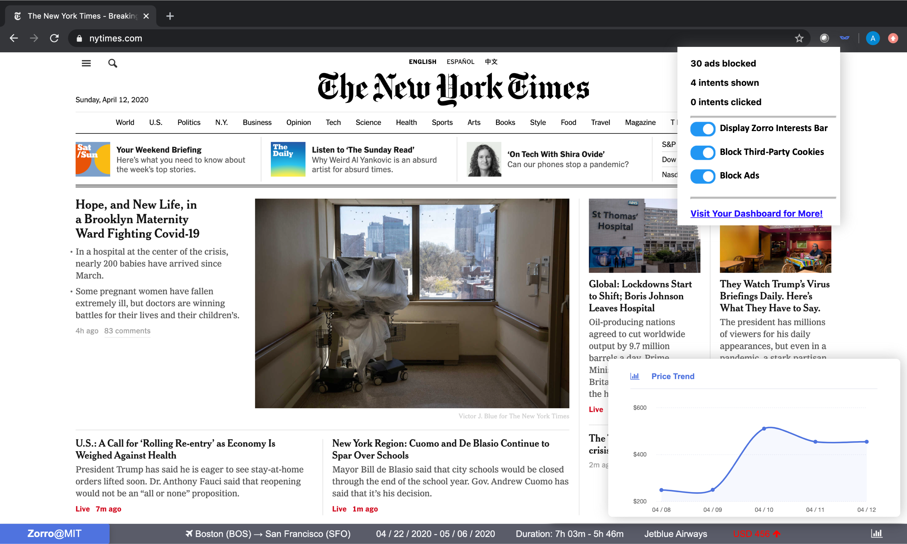

Zorro Interest Bar
As you surf the web, see ads you care about in a non-intrusive manner using the Zorro Interest Bar.

Zorro Interest Bar
The Zorro Interest Bar is located at the bottom of websites as you surf the web. It shows you one ad related to one of your interests, as well as some relevant information such as price, location, etc. In addition, a graph icon at the right of the interest will display the price trend for the past few days.
You can turn off the interest bar at any point with a click using the Chrome Extension icon.
Customize Settings
Customize your settings by clicking on the Zorro Chrome Extension icon. You can decide whether you want to see the Zorro Interest Bar, whether you want to block ads, and whether you want third-party cookies to track your browser activity.